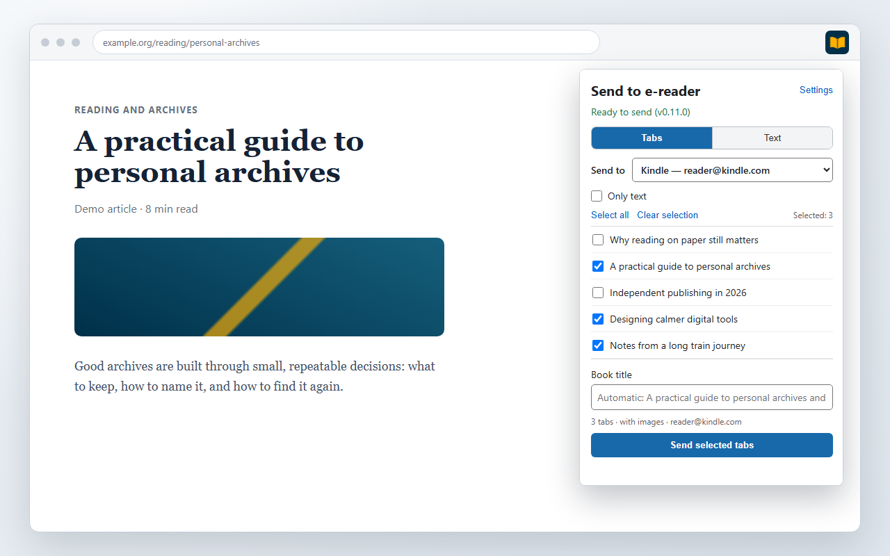
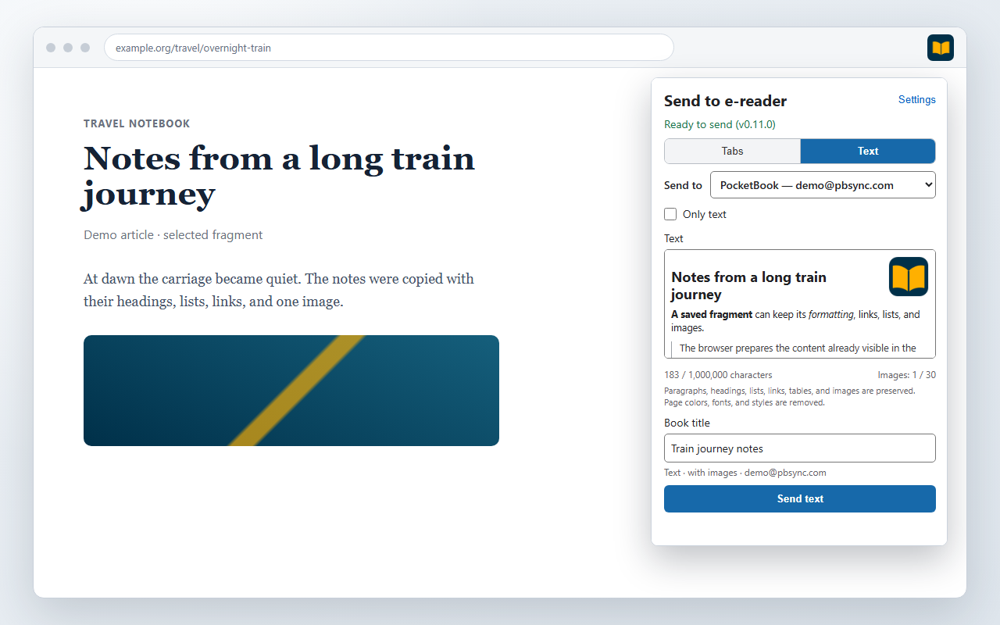
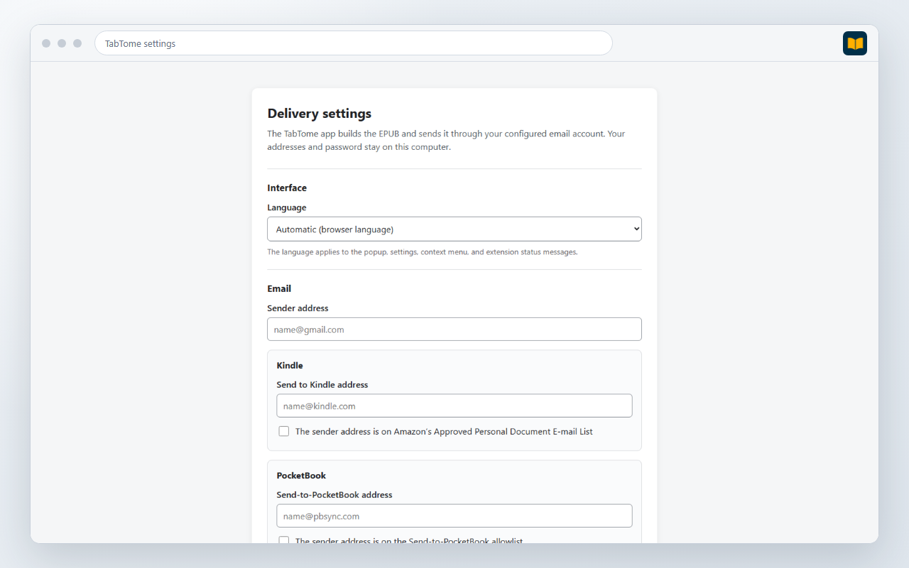

Finish reading without the browser
The article stays in your Kindle or PocketBook library and opens like a regular book.
Choose one tab, combine up to 25 open pages, or paste your own text. TabTome removes menus and other page clutter, builds an EPUB on your PC, and sends the book through your email account.
Your pages are not uploaded to the developer's server. No TabTome account is required.
The book stays in your e-reader library. Return to it on the train or in the evening, without notifications, website menus, or hunting for the right tab.
The article stays in your Kindle or PocketBook library and opens like a regular book.
Combine up to 25 tabs, such as a week's long reads or material on one subject.
The extension reads the open tab, so it can sometimes capture articles available after sign-in. Firefox blocks extension access on some pages.
The app builds the book on your PC and sends it through your email account. You do not need a separate cloud library.
Select tabs from the list or paste your own material. When you paste formatted text, TabTome keeps links, lists, tables, and images.



TabTome does not send source pages to the developer's server. Only the data needed to retrieve images and deliver the book goes online.
The TabTome developer receives no articles, books, email addresses, passwords, send history, or analytics. Read the full privacy policy.
TabTome works in Firefox on 64-bit Windows. Firefox blocks access to some pages, and TabTome does not carry every website element into an EPUB.
@pbsync.com.The extension selects pages. The TabTome app builds the EPUB, stores email settings, and runs only while sending.
The extension is not yet available from Mozilla Add-ons. For now, you can inspect the source code and read how TabTome stores and transfers data.